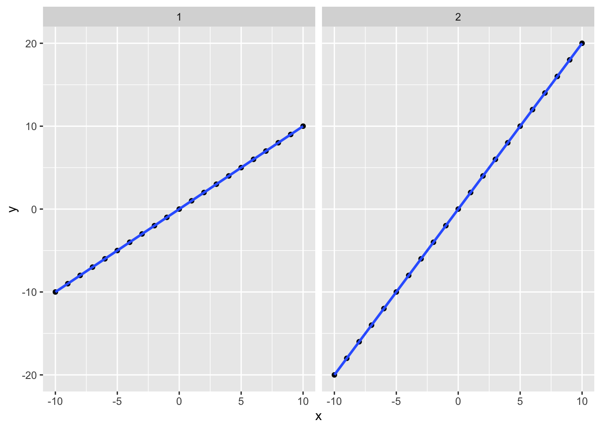

9 Comparing Quantities

9.0.1 Scatterplot
When comparing two numerical variables, often the most straightforward plot is a scatterplot. Each observation is plotted on a two-dimensional graph, and we can easily look for patterns or trends. Let’s compare the price paid (Average Daily Rate or adr) with how far out the guest booked the stay (lead_time).
As we’ll see in a minute, scatterplots aren’t always helpful if there are too many data points, so we’ll take a sample of 800 bookings from our dataset to plot (this also speeds up plotting).
### Scatterplot comparing price and how far out a guest booked the stay
# Set seed so that we get the same "random" numbers each time and the plot is reproducible
# You can pick any number for the seed, but to get the same result each time
# you have to use the same seed
set.seed(132334)
# Plot a random sample of 800 bookings that weren't complementary (ie, price = 0)
bookingdata %>%
filter(adr != 0) %>%
sample_n(size = 800) %>%
ggplot(aes(x = lead_time, y = adr)) +
geom_point(color = "#00759a") +
scale_x_reverse() + # Reverse the x axis so we "count down"
scale_y_continuous(labels=scales::dollar_format())+
labs(x = "Lead Time (Days)",
y = "Average Daily Rate (Price $)",
title = "Scatterplot: Distribution of Two Numerical Variables",
subtitle = "Average Daily Rate ($) versus Lead Time") +
theme(axis.line = element_line(color = "black"),
axis.title.y = element_text(angle = 0, vjust = 0.5),
panel.background=element_blank(),
panel.grid.minor=element_blank(),
panel.grid.major.y=element_blank(),
panel.grid.major.x=element_blank())
We see an interesting pattern emerge…there’s kind of a floor around $50 and few rooms are booked below that for a while. We can add a line to the plot to help people see it.
Let’s look at lead time for prices below versus above $50
bookingdata %>%
group_by(adr<=50) %>%
summarize(median_lead = median(lead_time))## # A tibble: 2 x 2
## `adr <= 50` median_lead
## * <lgl> <dbl>
## 1 FALSE 75
## 2 TRUE 199.0.1.1 Overplotting
We mentioned above that if you plot every one of the ~120K bookings on a plot, it’s going to be very crowded, so we took a smaller sample. But sometimes, even sampling isn’t enough, or it won’t resolve the issue.
Let’s suppose we want to look for a pattern in parking requirements in last minute stays…does everyone who books at the last minute arrive by car? And does group size matter (families vs business travelers?) So we have three variables here: lead time (numerical), group size (numerical), and whether the guests need a parking spot (nominal). We’ll just look at stays booked in the last week before the stay (and again, just take a small sample of the data since we have so many data points in this dataset).
### Make a scatterplot comparing group size, booking time
### and whether parking is needed
# Set the seed so that the sample is reproducible
set.seed(678)
# Make the plot
bookingdata %>%
filter(lead_time<=7) %>%
sample_frac(size = 0.05) %>% # Sample just 5% of the data
mutate(group_size = children + adults,
car = ifelse(required_car_parking_spaces > 0, "Driving", "Other transportation")) %>%
filter(group_size>0) %>%
ggplot(aes(x = lead_time, y = group_size, color = car)) +
geom_point() +
labs(color = "Guest Transportation",
x = "Booking Lead Time (Days)",
y = "Group Size",
title = "Transportation Method by Group Size and Booking Lead Time") +
scale_x_reverse() +
scale_color_manual(values = c("#00759a", "grey70")) +
theme(axis.line = element_line(color = "black"),
axis.title.y = element_text(angle = 0, vjust = 0.5),
panel.background=element_blank(),
legend.position = "bottom",
legend.key = element_rect(fill = "white"))
Okay, so nobody booking on the day of their stay needs parking. Wait, really? Also, we see 32 points. But there are more data points in the dataset (even after sampling). What’s going on here is overplotting…there are dots on top of one another.
Three solutions to overplotting are to:
Jitter points slightly (moving them away from each other) with
geom_jitter()Adjust transparency (with an
alpha) so that points become transparent and you see where they are denserSample the data using
sample_n()orsample_frac()and only look at some of the data points
9.0.1.1.1 Jittering
One solution is jittering, where we move points slightly to the side so that we can see them. Instead of geom_point we use geom_jitter.
### Make a jittered scatterplot comparing group size, booking time
### and whether parking is needed
# Set the seed so that the sample is reproducible (and matches the one up above!)
set.seed(678)
# Make the plot
bookingdata %>%
filter(lead_time<=7) %>%
sample_frac(size = 0.05) %>% # Sample just 5% of the data
mutate(group_size = children + adults,
car = ifelse(required_car_parking_spaces > 0, "Driving", "Other transportation")) %>%
filter(group_size>0) %>%
ggplot(aes(x = lead_time, y = group_size, color = car)) +
geom_jitter() +
labs(color = "Guest Transportation",
x = "Booking Lead Time (Days)",
y = "Group Size",
title = "Transportation Method by Group Size and Booking Lead Time") +
scale_x_reverse() +
scale_color_manual(values = c("#00759a", "grey70")) +
theme(axis.line = element_line(color = "black"),
axis.title.y = element_text(angle = 0, vjust = 0.5),
panel.background=element_blank(),
legend.position = "bottom",
legend.key = element_rect(fill = "white"))
Now we can see that there is quite a bit of diversity and the pattern isn’t so clear. We still have some overplotting, but it’s not as bad. What’s the potential downside? Well, it kind of looks like there are groups with 1.5 guests, but we know that’s not true. WIth jittering, you are slightly altering the values so it’s not a true representation of the underlying data; you might see patterns in the jittered version that don’t exist in real life.
9.0.1.1.2 Adjust Transparency Alpha
9.0.1.1.3 Sample Data
9.0.2 Bar Chart
Bar charts allow people to quickly compare quantities. Unlike scatterplots, they may not show every observation and usually require us to summarize the data in some way. The default is often the count of observations, but we may also look at the mean, median, max, etc.
bookingdata %>%
ggplot(aes(x = reservation_status, y = adr, fill = hotel)) +
geom_bar(stat = "summary", fun = "mean", width = 0.8, position = position_dodge2()) +
stat_summary(aes(y = adr + 4, label = dollar(round(..y..,0))), fun = "mean",
geom = "text",
hjust = 0.5, angle = 0, size = 3,
position = position_dodge(width = .9)) +
scale_fill_manual(values = c("#7a0019", "#00759a")) +
labs(x = "Reservation Status",
y = "",
title = "Mean ADR ($) by Hotel",
fill = "") +
theme(axis.line.y = element_blank(),
axis.line.x = element_line(color = "gray40"),
axis.text.y = element_blank(),
axis.ticks = element_blank(),
plot.background = element_blank(),
panel.background = element_blank(),
panel.grid = element_blank(),
plot.title = element_text(hjust = 0.5),
legend.position = "bottom")
One critical consideration is to ensure that the Y axis starts at zero for bar charts. It can be very misleading to present a bar graph that doesn’t start at zero because the magnitude of the difference isn’t the same as the total magnitude represented. In fact, geom_bar in ggplot won’t even let you start the Y axis anywhere else…to create the figure on the left I had to “brute force” it with geom_rect.
